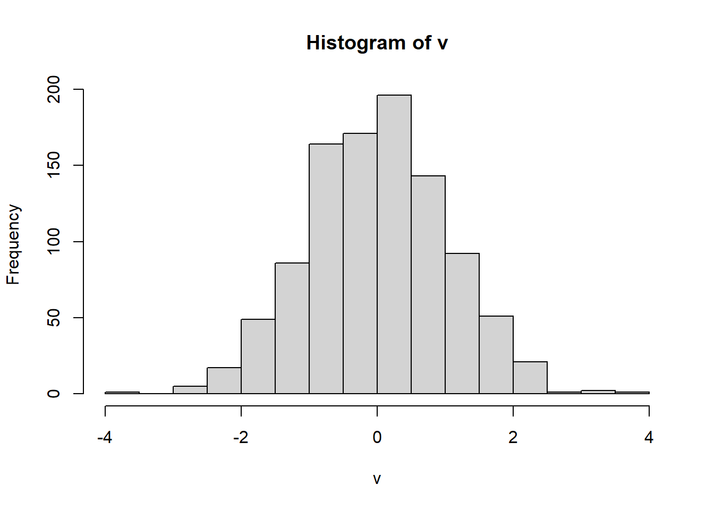
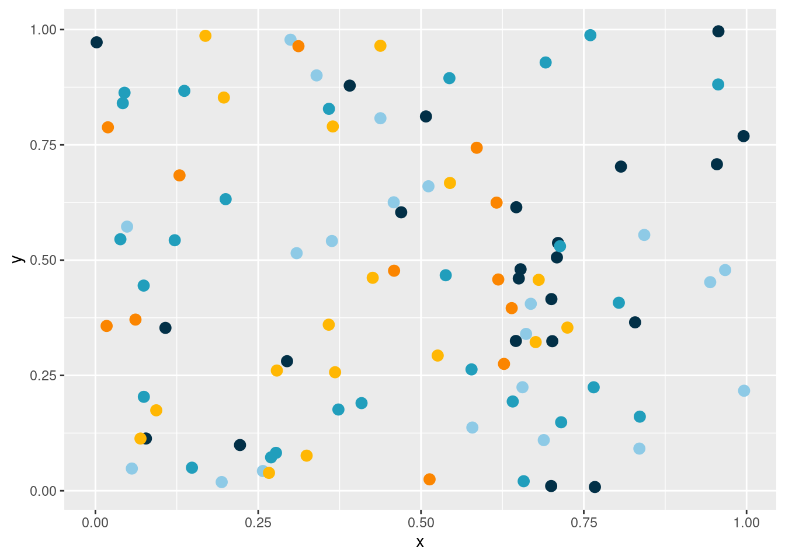
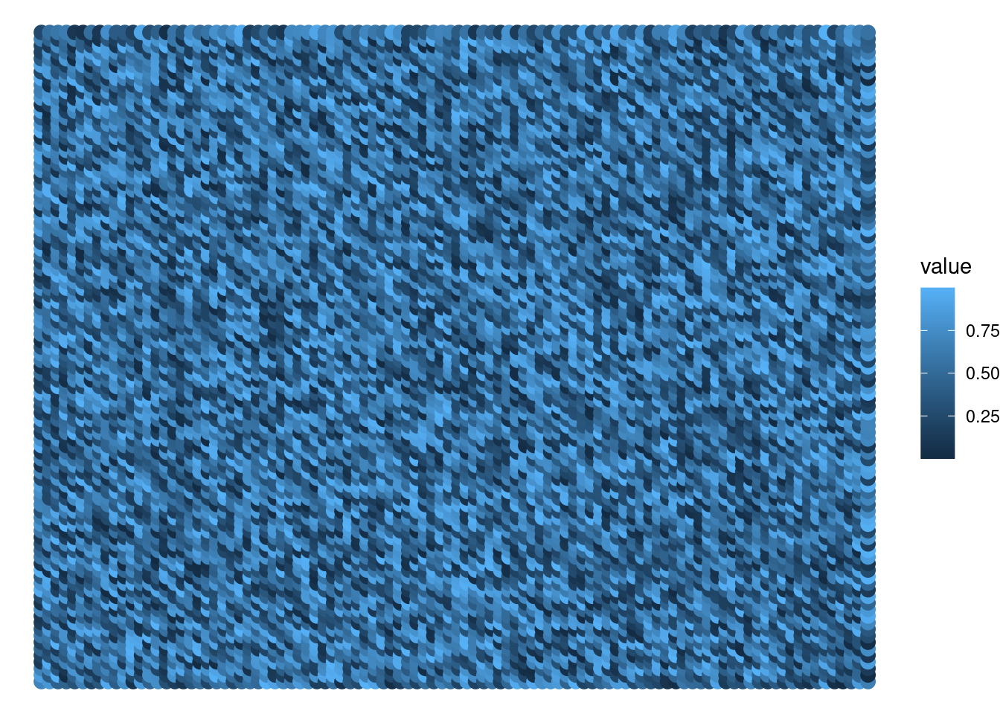
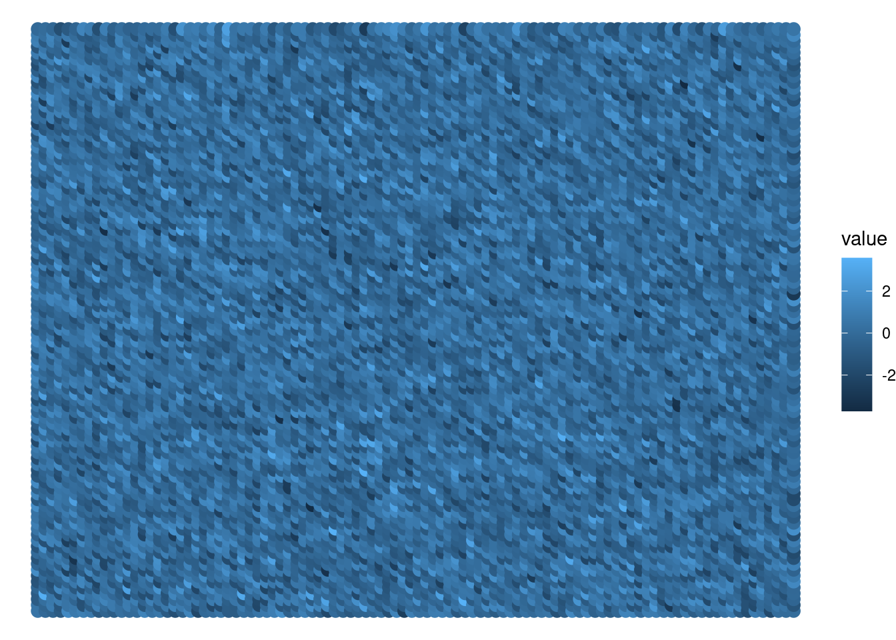
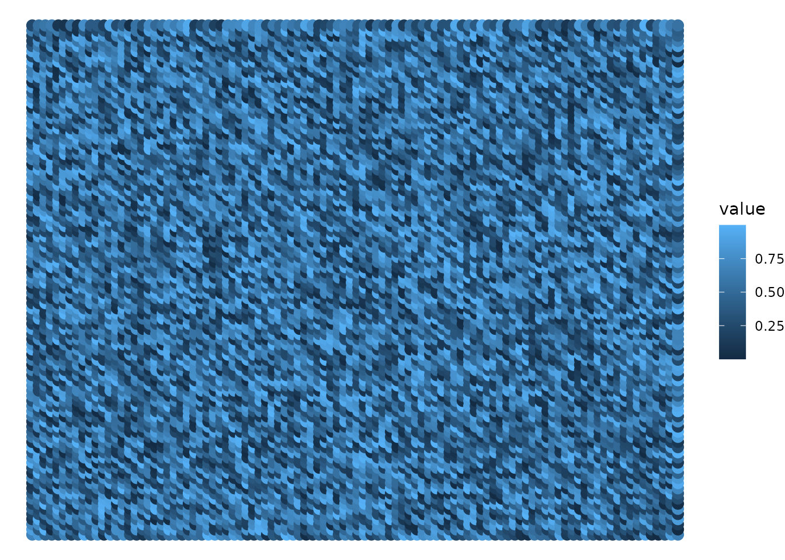
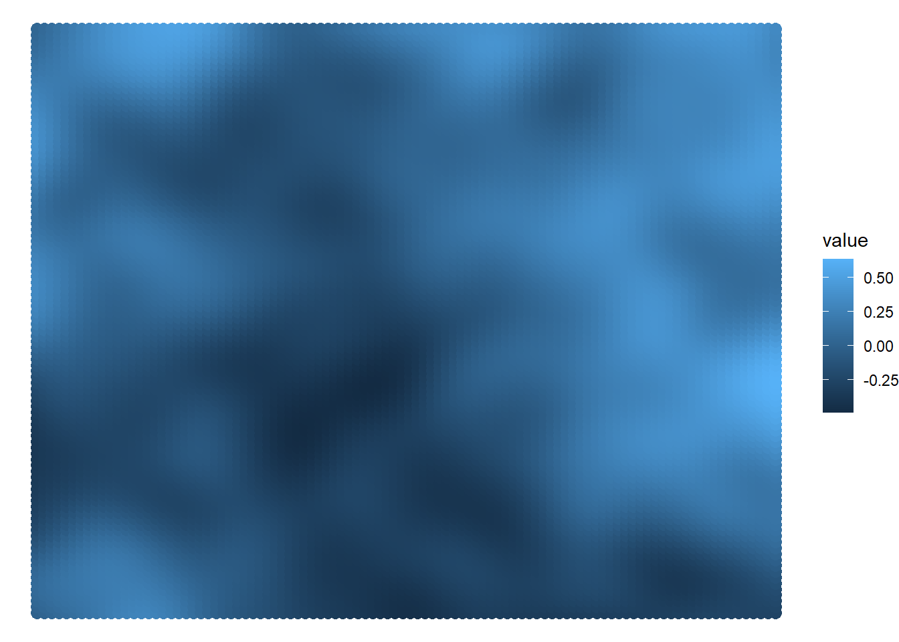

runif(3)[1] 0.9766178 0.6681356 0.2424230runif(3)[1] 0.7523809 0.9732064 0.5455121In this chapter, we will study more about how to produce chaos with randomness. We will learn about the different types of random number generators that are available in R, and we will also learn about producing this randomness in one and two dimensions.
Chaos is, in general, a hard topic for us, programmers. Because our job is the complete opposite of that. We work with logic, precision, and computers. Chaos and randomness are not part of our essence.
But a little taste of chaos is very essential to any generative art you may produce. You could say that, generative art is mostly a synergy between chaos and order. A big part of it comes from combining random patterns we find in nature with the order and logic of math. Because we use geometry and a lot of math to draw and mold shapes in the screen, we use colors and color theory to make everything colorful and attractive, and we also combine all of that with randomness to achieve random patterns that are interesting to look at.
That is why, in this chapter, I want to focus on how random values can be generated in R, and what are the options available for you.
Computers can not generate “true random numbers”. Instead, they use an “initial state” as the basis for generating the random values. That is why we usually say that computers can generate “pseudo-random numbers”.
They are “pseudo” in the sense that they are not truly random, because they are based in a state that can be reproduced, if we want to. But they are “random” still because they look random enough for us, mere humans, and they do have some component of randomness that are intrinsic to them.
But what is this “initial state”, from which the random numbers are generated? This “initial state” is usually represented as a single integer, and it is called as the “seed for the random number generation”, or simply, a “random seed”. So, to generate random numbers in R, we use an integer as the “seed” to represent the initial state for the random number generation.
In the example below, we can see that every time I run runif(), I get a different answer as result, or a different set of random values:
runif(3)[1] 0.9766178 0.6681356 0.2424230runif(3)[1] 0.7523809 0.9732064 0.5455121This happens because the “initial state” is different in each call to runif(). Every time I run runif(), R automatically and randomly selects a seed for you. That is why the results in the example above are different between each call to runif(). Because the seeds used in each call are different.
If we use the same “seed” as the initial state, we can produce the exact same set of random numbers. That is, if we want to have reproducibility in this process of number generation, we need to use the same random seed that was used before.
You can set the integer to be used as the random seed, by using the set.seed() function. In the example below, I am setting the random seed to 40. Because of that, I get the exact same set of random values in each call to runif().
set.seed(40)
runif(3)[1] 0.6835820 0.8729038 0.6901173set.seed(40)
runif(3)[1] 0.6835820 0.8729038 0.6901173This is very important! If you do not set your random seed, then, you will never be able to reproduce the same set of random values, and, as consequence, you will never be capable of reproducing the same art again, or the same output in your generative art.
Let me repeat this. You should always explicitly set the random seed you are using in your process. Because if do not, then, you are facing the risk of producing a very cool output in your code by completely accident, and you loose the chance to save this output in time, or to reproduce it later in the day, or to improve it by adding more adjusts in configuration, colors, brightness, and positions.
There are different types of generators available in R. Each generator produces a sequence of random values following a specific rule or target, and as a consequence of that, each one produces a different type of randomness.
In base R, there are at least three generators that you must known for generative art:
runif() produces random values that follow a uniform distribution;rnorm() produces random values that follow a normal distribution;sample() produces a random sample from a known set of values;Both runif() and rnorm() functions can be used to generate a sequence of random numbers, while the function sample() is used when you are trying to generate a random sample from a known set of values.
There are other generators available in R that will be very useful for you in generative art, specially trough the ambient R package1, which is a R interface to the FastNoise C++ library.
This ambient package offers two other generators that will be discussed here, which are:
ambient::noise_perlin(): produces random values using the Perlin Noise algorithm.ambient::noise_simplex(): produces random values using the Simplex Noise algorithm.But these two generators from the ambient R package produces random values exclusively for two to three dimensions. Because of that, they will be discussed in details only at Section 3.4.
runif()The runif() function generates a sequence of random values by following an uniform distribution. It basically means that no specific number is favored during the generation process. Each number have an equal amount of chance to be selected in the output.
You could say that runif() produces an output that truly looks “random” in all aspects. Because nothing is unbalanced, nothing is favored in detriment of the other, and therefore, you cannot see any clear pattern in the result, everything just looks… completely random.
By using a histogram, we can see this very balanced aspect of runif(). In the output below, we can see that each range of numbers described in the histogram appears in the output by an almost equal amount. That is why the distribution is called “uniform”.
set.seed(532)
v <- runif(1000)
hist(v)
The function runif() have three arguments: 1) n - the number of random values to be generated; 2) min - the minimum value that can be generated; 3) max - the minimum value that can be generated.
You can use the min and max arguments to specify the range of values that will be generated. If you use for example, runif(10, min = 0, max = 50), it means that R will generate 10 random values, ranging from 0 to 50.
runif(10, min = 0, max = 50) [1] 42.58383 38.58029 30.60287 25.59512 20.91538 36.19737 30.04260 24.12355
[9] 19.17031 19.36764By default, the min and max arguments are configured to 0 and 1. As a consequence, instead of explicitly setting these arguments, to achieve a certain range of values, you can also use a factor to scale the random values generated to the scale you want to. This means that, the code runif(10) * 50 is essentially the same thing that setting min and max to 0 and 50.
rnorm()While runif() follows a uniform distribution, the rnorm() function generates a sequence of random values by following a normal distribution instead.
This is a big difference, because it means that numbers that are closer to the mean of the distribution will be selected more often than others. This makes the output from rnorm() not so much random as it is in runif(), because now, we have a clear pattern (more numbers closer to the mean) present in the output.
We can use a histogram again to see this pattern more clearly. You can see in the output below that, numbers that are closer to zero (which is the mean of the distribution) appears more often than numbers that are further apart, in the extremities of the distribution.
set.seed(532)
v <- rnorm(1000)
hist(v)
The function rnorm() have three arguments: 1) n - the number of random values to be generated; 2) mean - the mean value of the distribution; 3) sd - the standard deviation of the value.
rnorm(10, mean = 50, sd = 10) [1] 49.21595 47.02894 38.14195 48.00484 59.31028 49.19061 53.44236 63.60016
[9] 44.24109 41.01438You can use the mean argument to concentrate the random values around a specific value of your preference. For example, if mean = 50, then, the majority of random values generated will be close to 50.
With the sd argument you control how much the values distance from the mean value of the distribution. If sd is very high, then the distribution will be more spread, meaning that the values will be, in general, more distant from the mean. If sd is low, then, the inverse will happen.
sample()When you have a known and finite set of values, and you want to randomly distribute them across your generative art, the function sample() is the perfect candidate to help you in this task.
The function sample() have three arguments: 1) x - and object that contains the set of values from which you want to extract the sample; 2) size - the size of the sample, i.e. how many elements will have in the output sample; 3) replace - the sample should be performed with replacement?
The replace argument determines if each value in the object x can be selected more than once in the output. In others words, if a specific value is selected in the sample, can this value be selected again over the next elements of the sample? For the majority of cases, you will probably answer “yes” to this question. So you normally set this argument to TRUE. But this might not be your case, so you would have to set this argument to FALSE.
I personally use sample() a lot to distribute my color pallete across the elements of my image. Take the code below as an example, I have 100 points in my plot, and I want to randomly select a color from the pallete object to each point. I can easily do that with sample():
library(ggplot2)Warning: package 'ggplot2' was built under R version 4.3.2pallete <- c(
"#8ecae6",
"#219ebc",
"#023047",
"#ffb703",
"#fb8500"
)
set.seed(50)
df <- data.frame(
x = runif(100),
y = runif(100)
)
df$color <- sample(
pallete, size = 100, replace = TRUE
)
ggplot(df) +
geom_point(
aes(x, y, color = color),
size = 3
) +
scale_color_identity()
On this section, we will discuss how to generate random values in two dimensions (x and y axis) of the Cartesian plane. Previously, we were generating random values in only one dimension, because we had a single sequence of random values at hand. But you are not limited to that!
Even though runif() and rnorm() are functions that generates a single sequence of random values, in theory, there is nothing stopping you from spreading this sequence of random values across any dimensions you want in the Cartesian plane.
In other words, there is hacky way of producing two dimensional randomness from a single sequence of random values. The basic idea is to generate a single sequence of random values, that is big enough to fill a matrix of dimensions \((x, y)\). Then you simply spread the values of this sequence through the elements of this matrix. Because this matrix have two dimensions (x and y), it behaves as the two dimensions in the Cartesian plane.
For example, let’s suppose you are building a generative art inside an image with 100x100 area. That is, an image with 100 pixels of width and 100 pixels of height. If you want to add some randomness to all pixels in this image, then, you need to generate \(100^2\) random values, and spread these values across each coordinate in this 100x100 area.
Having that in mind, you could produce a sequence of \(100^2\) random values, and then, store these values in a matrix of 100 rows and 100 columns. This way, each element in the matrix represents a specific spot/pixel in your image.
v <- runif(100^2)
m <- matrix(v, ncol = 100, nrow = 100)You could also, store this sequence of random values inside a data.frame. You just add two new columns in this data.frame to store the x and y coordinates for each random value in the sequence. This is also a valid strategy to map each random value to a specific spot/pixel in your image.
df <- data.frame(
x = rep(seq_len(100), each = 100),
y = rep(seq_len(100), times = 100),
random_value = runif(100^2)
)In the example below, we are using runif() to generate random values in two dimensions. After that, I plot these random values as points colored with a gradient of colors. Each point represents a specific point/coordinate in the Cartesian plane, and it’s color represent the random value that was mapped to that particular position in the plane.
This visualization is a great way to visualize the “true randomness” of runif(). Because we can not see any clear pattern in the colors of the points, they just looks like a complete mess of colors.
library(ggplot2)
build_df <- function(random_values, n){
data.frame(
x = rep(seq_len(n), each = n),
y = rep(seq_len(n), times = n),
value = random_values |> as.vector()
)
}
n <- 100
set.seed(40)
random <- matrix(runif(n ^ 2), n, n)
d <- build_df(random, n)
ggplot(d) +
geom_point(
aes(x = x, y = y, color = value),
size = 3
) +
theme_void()
When we use rnorm() instead, it still produces a pretty random result. However, we can see that the colors are more flat, they seem less random compared to runif(). If you remember of Section 3.2.2, what is happening is that rnorm() tends to select values that are closer to the mean of the distribution, which is zero in this case.
That is why the colors in the plot looks more flat. The colors in the image below seen more flat, because the majority of the values sorted by rnorm() are values that are very close to zero.
set.seed(40)
random <- matrix(rnorm(n ^ 2), n, n)
d <- build_df(random, n)
ggplot(d) +
geom_point(
aes(x = x, y = y, color = value),
size = 3
) +
theme_void()
Perlin noise is a type of gradient noise developed by Ken Perlin in 1983 (Wikipedia 2024). I think there are two ways of describing what Perlin noise is. One approach is to answer “why it was developed?”. And the other approach is to explain what the output of the algorithm looks like.
In essence, the Perlin noise algorithm was developed by Ken, after his experience working at the Disney’s film called “Tron”2. The main idea behind it, was to develop an algorithm that produced more natural appearing textures on the computer screen. In other words, Perlin noise was developed to improve the quality of textures used in computer graphics.
This algorithm produces as output a sequence of random values, as any other random number generator we have seen so far. But the key feature of this algorithm, is that each random value in the sequence is very close (or “similar”) to it’s neighbors.
For example, if you produce a sequence of, let’s say, 100 random values with Perlin noise, the 12th value in this sequence will be a value that is very close to the values in the 10th and 13th position in the sequence. This logic repeats to all values in the sequence.
The main consequence of this characteristic, is that you get a very smooth transition between each random value in the sequence. These values have a less erratic, or drastic behavior, compared to the values produced by others generators, such as runif().
We can visualize this pattern of the algorithm by using the same visualization we were using in the previous section. You can see in the output below that, the color variation is very smooth compared to the output of runif() or rnorm(). In fact, the color variation is so smooth that you can actually see patterns or shapes in the output.
To generate random values with Perlin noise in R, we use the noise_perlin() function from the ambient R package. The first and main argument of this function, is the dimensions of the matrix of random values you want to produce. If you want, let’s say, a matrix with 50 columns and 50 rows (that is \(50 \times 50 = 2500\) random values), then, you give the vector c(50, 50) as input to this function. In the example below, we are creating \(100 \times 100 = 10000\) random values.
library(ambient)Warning: package 'ambient' was built under R version 4.3.2n <- 100
set.seed(40)
random <- noise_perlin(c(n, n))
d <- build_df(random, n)
ggplot(d) +
geom_point(
aes(x = x, y = y, color = value),
size = 3
) +
theme_void()
The Perlin noise is one of the most used algorithms in the computer graphics industry. It is used everywhere, and it is massively used in generative art as well.
This algorithm is so powerful that it’s author, Ken Perlin, won one of the highest prizes in computer science for creating it.
But despite it’s popularity, the original Perlin noise algorithm have some important limitations regarding the features of the noise produced, and also, the big amount of computational resources required to compute the noises at larger scales.
That is why, Ken Perlin developed a new algorithm, called the Simplex noise. Simplex noise is an algorithm that produces similar results as the Perlin noise. But it is much faster to compute at larger scales, and the noise values produced by it also have some different features.
The Simplex noise algorithm normally produces “stronger” results compared to the original Perlin noise. In other words, the random values produced by the algorithm vary more rapidly.
You can see this fact in the output below. Because you have more patterns in the result image, or, a more detailed image in general. You can also describe it as: the transitions between blue and black are faster (or, less smooth), compared to the output of Perlin noise.
We use again the ambient R package to generate the random values sequence. But this time, we use the noise_simplex() function instead, that uses the Simplex noise algorithm. The idea is exactly the same as it was in noise_perlin(). In the first and main argument of the function, you give the dimensions of the output matrix you want, as a vector of 2 elements.
set.seed(40)
random <- noise_simplex(c(n, n))
d <- build_df(random, n)
ggplot(d) +
geom_point(
aes(x = x, y = y, color = value),
size = 3
) +
theme_void()